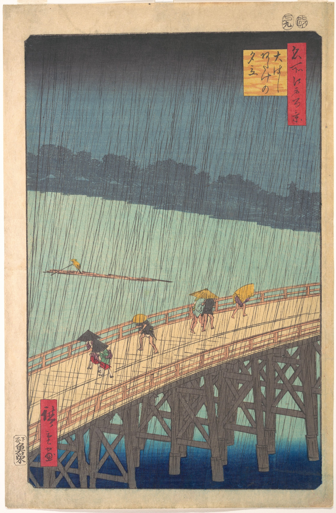

A slanting bridge. A handful of umbrellas. Fine lines of rain turn separate journeys into a shared feeling.
Bridge rises. Far bank falls.
Open water slows the eye.
Cool neighbors; muted warm contrast.
Ochre gives the eye a landing place.
Dark cloud, pale river, deep blue below.
Value builds light without a visible sun.
See card 2 for approximate practice colors, not exact samples.
1857 · Ink and color woodblock print.
Fine rain lines cross broad color fields.
Utagawa Hiroshige (1797–1858).
From One Hundred Famous Views of Edo.
Bent shoulders. A shared umbrella.
Vast weather; small acts of care.
55% paper + 30% rain green
+ 10% indigo + 5% ochre.
Build on one diagonal. Warm the figure.
Check the focal point at thumbnail size.
See card 2 for approximate practice colors, not exact samples.
Sudden Shower over Shin-Ōhashi Bridge and Atake
Utagawa Hiroshige · 1857 · Metropolitan Museum of Art · JP3174
Rights remain with their respective holders where applicable.
Museum status: Public Domain. Independent interpretation. Full image.